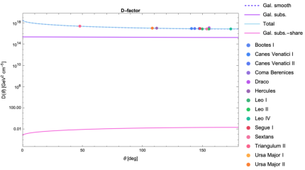
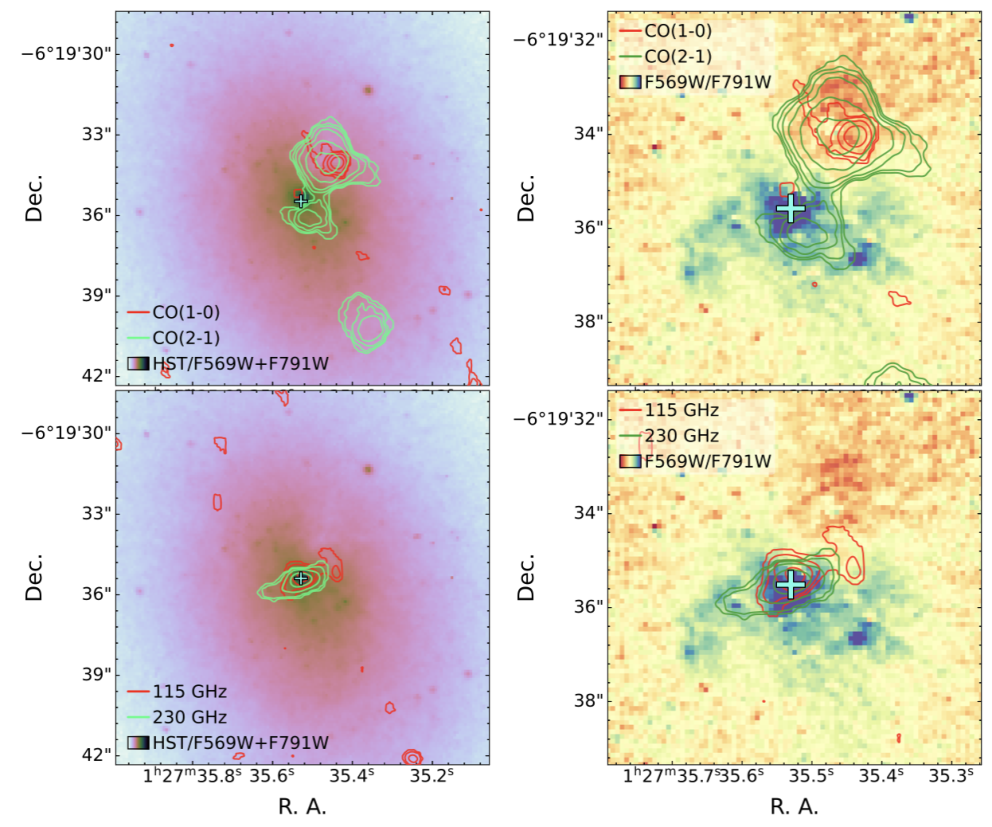
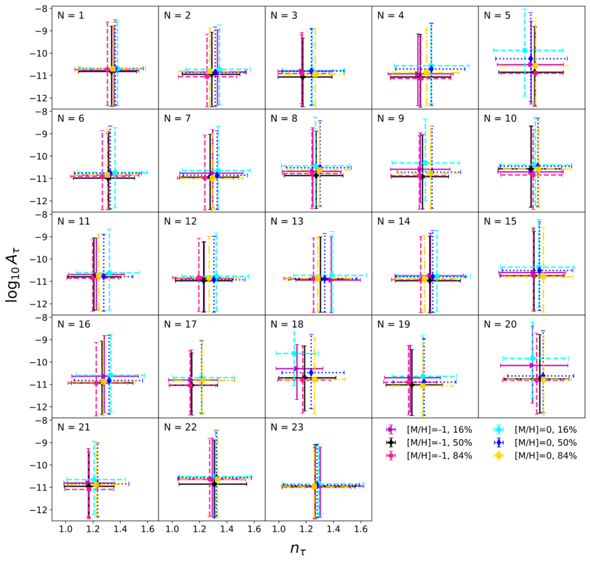
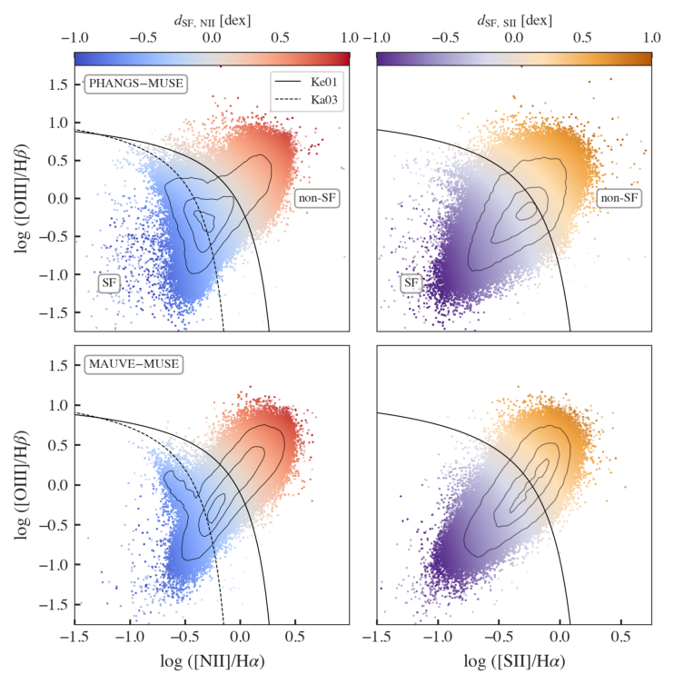
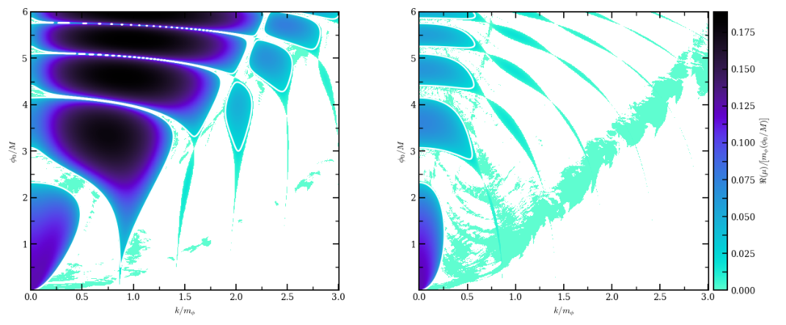
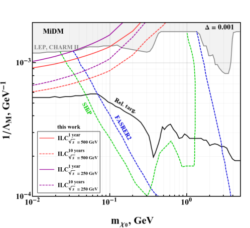

Galaxies
Semi-analytical evolution models of galaxies are a useful and computationally inexpensive tool for fast assessment of individual properties and their evolution.…
No papers in today's selection for this topic.
Semi-analytical evolution models of galaxies are a useful and computationally inexpensive tool for fast assessment of individual properties and their evolution.…
We present a comprehensive study of the relationship between star formation rate (SFR) and stellar mass (M_*) from z = 0.1 to z = 4 using a mass-complete sample of approximately 290,000 galaxies from the COSMOS2020 catalog.…
The core-Sérsic model is the standard tool for describing partially depleted stellar cores in massive early-type galaxies, yet its physical admissibility has rarely been examined.…

The measurement of galaxy morphological parameters from astronomical images features in a wide range of modern analyses, including galaxy evolution and cosmological weak lensing studies. The precision and accuracy of morphological parameter estimation can be influenced by several key factors.…

In this work, we investigate a decaying dark matter scenario and its associated indirect detection signatures. The model consists of a scalar singlet with a lifetime exceeding the age of the Universe.…

Detecting cold molecular gas in metal-poor starbursts remains a major challenge. Low carbon and oxygen abundances hinder CO formation, while low dust content reduces shielding against UV photodissociation. Consequently, CO, the main tracer of molecular gas, becomes faint or undetectable.…

Extreme emission-line galaxies (EELGs) probe chemical enrichment in low-mass, bursty systems where star formation, feedback, and gas accretion are poorly constrained.…

We present early science results from the MAUVE (Multiphase Astrophysics to Unveil the Virgo Environment) program which targets 40 Virgo Cluster galaxies to investigate the effect of environment on the interstellar medium (ISM) at ~100 pc scales.…
No papers in today's selection for this topic.
Axion-Like Particles (ALPs) are well-motivated candidates for dark matter and potential mediators to the dark sector. We present a search for ALPs coupled to photons, based on a reinterpretation of COMPASS data.…

We study the resonant production of ultralight vector dark matter from an oscillating spectator scalar $φ$ coupled to a massive vector $A_μ$ through a dilatonic kinetic function $\W(φ)$. The mechanism contains a narrow branch near $\mA/\mphi\simeq 1/2$.…
Semi-visible jets (SVJs) provide a characteristic collider signature of strongly interacting dark sectors, in which the key model parameter $r_{\mathrm{inv}}$ controls the fraction of dark hadrons decaying to dark matter candidates.…

In this work, we investigate the projected sensitivity of the Beam-Dump eXperiment at the International Linear Collider (ILC-BDX) to inelastic fermionic dark matter coupled to the Standard Model photon through an off-diagonal magnetic dipole operator.…
We investigate primordial black hole (PBH) formation in a cosmological scenario where curvature perturbations follow purely quadratic non-Gaussianity, $ζ= A(φ^2-\langleφ^2\rangle)$, arising from tachyonic instability in multi-component inflationary models.…